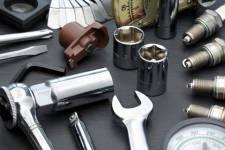
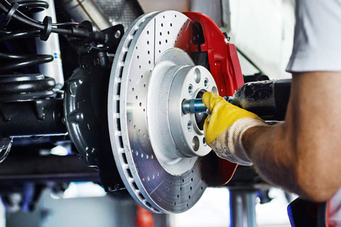

Bilservice
Bilservice står för en stor del av driftskostnaden för en bil. För en äldre bil kan utgifterna för bilservice vida överstiga både drivmedelskostnaden (bensin, diesel eller biogas) och värdeminskningen samt kostnad för bilförsäkringen. Därför är det viktigt att du som bilägare försöker hitta kunniga och kostnadsmedvetna bilverkstäder dit du lämnar bilen när det är tid för bilservice eller bilreparationer.
Det är välkänt att märkesverkstäder har högre avgifter för bilservice än fristående bilverkstäder. Den högre kostnaden beror på flera saker.
- Bilservicen utförs alltid med originaldelar som säljs via biltillverkaren och generalagenten.
- Vid bilservice på bilverkstaden finns all utrustning speciellt för denna bilen.
- Märkesverkstaden vet att de flesta kunderna automatiskt kommer tillbaka till deras bilverkstad om de genomför bilförsäljningen av en ny bil eftersom det ser bättre ut i serviceboken.
Vad som inte är lika välkänt är att en stor del av biltillverkarnas vinster kommer av inkomster får bilservice och bilreparationer. Bilpriserna är mycket pressade med inte kostnaden för bilservice och reservdelar. Bilservicen på en märkesverkstad kan både två och tre gånger så dyr som hos en bilmekaniker på en mindre ort.
Jämförelse av bilservice på märkesverkstaden & oberoende bilverkstad
Det finns flera jämförelser som gjorts för bilservice av bilen mellan märkesverkstäder och bilverkstäder som inte är återförsäljare eller kopplade direkt till bilmärket. Generellt sätt är det alltid billigare att lämna i bilen på bilservice på en verkstad som inte är en märkesverkstad. Allra billigast att göra bilservice är det på små enmans eller fåmansbolag på små orter.
Nedan finns ett antal bra länkar gällande jämförelser för bilservice på märkesverkstäder och dess konkurrenter samt slutsatser.
Välj rätt verkstad och betala halva priset för bilservicen
Vi Bilägare har gjort en prisjämförelse som visar att det kan kosta dubbelt så mycket att lämna in bilen för en vanlig 6000 mils service på en märkesverkstad jämfört med Meca eller Mekonomen. Denna undersökning är inte helt ny och konkurrensen har minskat något då Meca blev uppköpta av Mekonomen.
Fusk vid bilservice
Det har förekommit många rapporter om fusk vid bilservice. Det kan vara så att bilverkstaden har sagt att det gjort en service och kontroll men denna har inte blivit gjord. Det har även hänt att bilverkstaden har glömt att göra en viktig åtgärd som står i serviceboken som t.ex. byte av kamrem efter ett visst antal år.